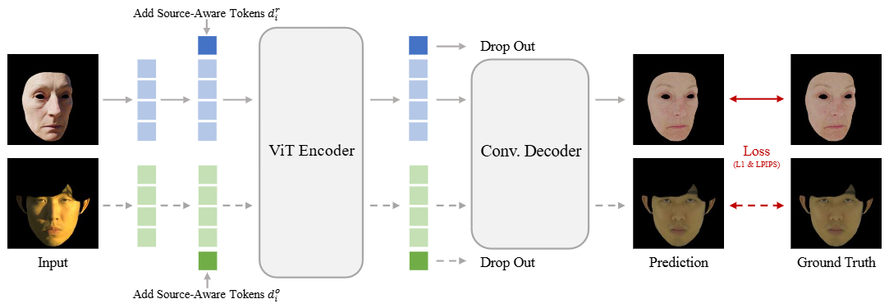
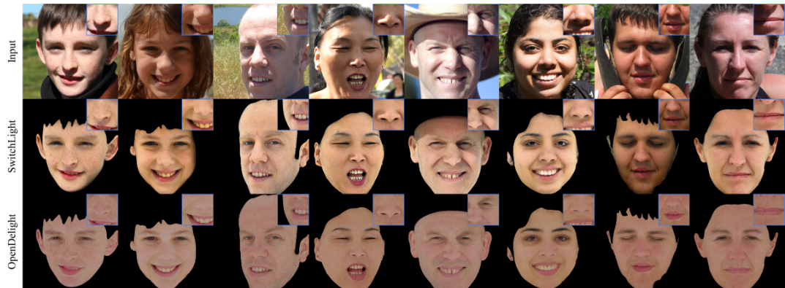

Learning a Delighting Prior for Facial Appearance Capture in the Wild
SIGGRAPH 2026 (Journal Track)


Overview
High-quality facial appearance capture has traditionally required costly studio recording. Recent works consider an in-the-wild smartphone-based setup (e.g., FLARE, NextFace, and Xu et al.); however, their model-based inverse rendering paradigm struggles with the complex disentanglement of reflectance from unknown illumination (especially on removing cast shadows). To bridge this gap, we propose to shift the paradigm into training a powerful delighting network as a prior to constrain the optimization.

As shown in the framework figure above, we leverage the OLAT dataset and the rendered Light Stage scans for training, and propose Dataset Latent Modulation (DLM) to seamlessly integrate these heterogeneous data sources. Specifically, by conditioning the core network on learnable source-aware tokens, we decouple dataset-specific styles from physical delighting principles, enabling the emergence of a delighting prior that outperforms existing proprietary models.
Compared to the best proprietary model, SwitchLight, our method demonstrates better delighting results with significantly fewer baking lighting effects, as shown in the figure below. More importantly, all the code, pretrained weight, and dataset of our method is open-sourced.

This powerful delighting prior enables a simple and automatic appearance capture pipeline that achieves high-quality reflectance estimation from casual video inputs. Compared to our previous work WildCap, our new method not only eliminates the need for manual intervention to correct network artifacts but also removes its complex and specialized inverse rendering process, while achieving on par or better quality, demonstrating that a superior delighting prior can fundamentally simplify the appearance capture problem. See our video for more results:
Citation
@inproceedings{han2026opendelight,
author = {Han, Yuxuan and Ming, Xin and Li, Tianxiao and Shen, Zhuofan and Zhang, Qixuan and Xu, Lan and Xu, Feng},
title = {Learning a Delighting Prior for Facial Appearance Capture in the Wild},
booktitle = {SIGGRAPH},
year={2026}
}